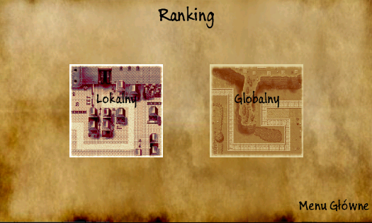
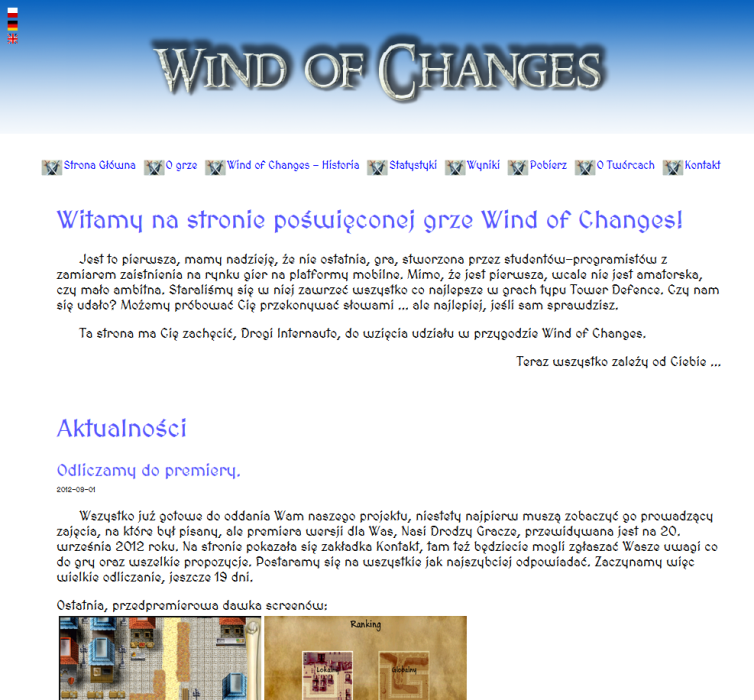
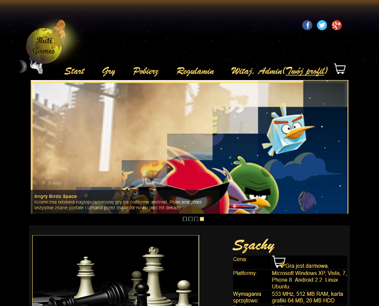
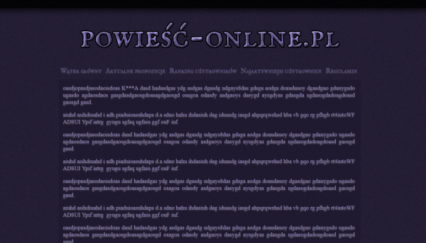
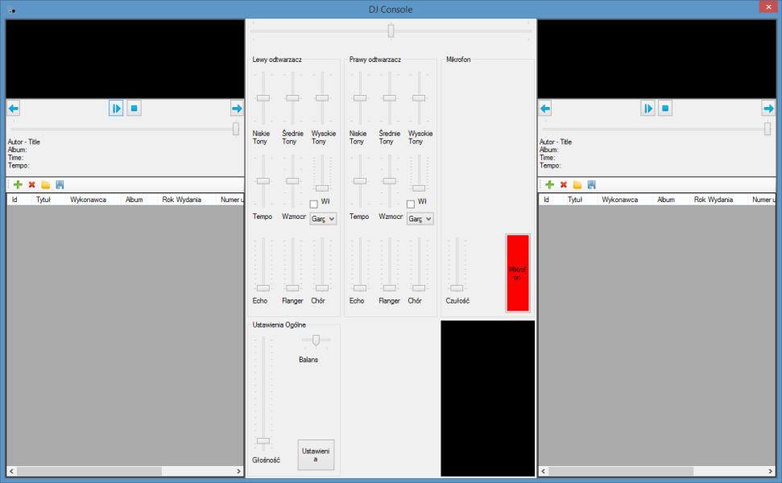
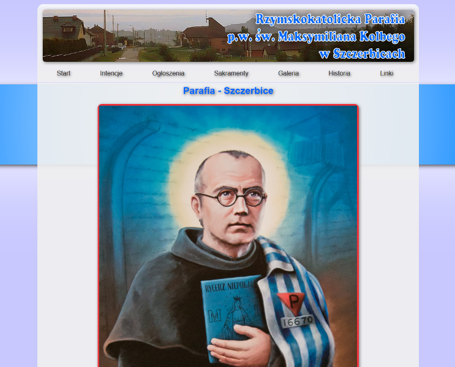

Witam!
Nazywam się Paweł Wołoszyn, jestem młodym i ambitnym inżynierem.
Chętnie wykonam dla Ciebie projekt strony internetowej lub oprogramowania.
Zapraszam do zapoznania się z moim portfolio.
Paweł Wołoszyn
Jestem absolwentem studiow pierwszego stopnia informatyki na Politechnice Śląskiej w
Gliwicach, z pozytywnym wynikiem obrony tytułu inżyniera. Wszystkie umiejętności jakie
posiadam, z zakresu tworzenia stron internetowych, są wynikiem własnej pracy i
zaangażowania. Językami takimi jak HTML czy CSS interesowałem się już w technikum. Wtedy
również poznałem tajniki programowania, dzięki czemu mogłem rozwijać swoje zainteresowania
związane z tworzeniem skryptów w języku PHP. Dodatkowo potrafię poruszać się w zagadnieniach
związanych z skryptami JavaScript czy jQuery. W chwili obecnej staram się zapoznać z przejmującymi
rynek standardemi jakimi są HTML5 oraz CSS3 i dodatkowo staram się pozać różne webowe frameworki takie jak
Ruby on Rails.
Wiedza jaką posiadam z zakresu programowania, polega również na doświadczeniu własnym, lecz dodatkowy rozwój umożliwiły
mi studia. Dzięki temu, w chwili obecnej, potrafię tworzyć oprogramowanie w językach takich jak: C# (.NET Framework),
C/C++, Java. Oprócz tego znam również w stopniu bardzo dobrym takie bazy danych jak: Mircosoft SQL oraz MySQL.
Projekty
W tej częci możesz zapoznać się z moimi projektami. Część z nich wykonywana jest w ramach studiów.
Zapraszam.
Aktualnie wykonuję
- Projekt sklepu internetowego wraz z panelem administracyjnym.
- Panel administracyjny dla strony parafialnej.
- Strona www firmy remontowej.
- ...
- Jeżeli chcesz aby Twój projekt znalazł się tutaj - napisz do mnie za pomocą formularza w dziale kontakt.
Gra Space Time
Gra wykonywana w języku c++ przy użyciu graficznej biblioteki SDL. Cały projekt został zrealizowany w sekcji
cztero-osobowej. Rozgrywka polega na przejechaniu wszystkich bramek w ograniczonym czasie.
Moim zadaniem w tym projekcie było stworzenie kilku grafik oraz opracowanie części logiki aplikacji.
Gra Wind of Changes

Gra tower defence. Program został stworzony przy użyciu języka C# oraz platformy .NET Compact Framework.
Całość działa pod kontrolą systemów mobilnych Microsoft Windows Phone 7.
Zadanie jakie zostało mi przydzielone w ramach tego projektu to stworzenie obsługi rankingu opartego o bazę MySQL
oraz witryny internetowej umożliwiającej podgląd wyników rozgrywki.
Strona internetowa dla gry Wind of Changes

Projekt będący dodatkiem do realizowanej gry na platformę mobilną Microsoft Windows Phone 7. W ramach projektu została
zrealizowana witryna, która działała w trzech wersjach językowych (polska, angielska, niemiecka). Na stronie można
odczytać informacje rankingowe z gry oraz historię zwiazaną z fabułą rozgrywki.
Strona została napisana przy użyciu technologii HTML, CSS oraz PHP. Informacje na stronie są przechowywane w bazie MySQL.
Opracowanie projektu platformy gier "RUTI Games"

Projekt obejmował dobór i odpowiednie opracowanie projektu pod względem wzorców architektonicznych, strukturalnych, analitycznych i projektowych.
Nad wszystkimi rozwiązaniami pracowałem w sekcji 4 osobowej. Zaprojektowana została odpowiednia architektura dla aplikacji mobilnych, desktopowych
(z uwzględnieniem systemów Windows i Linux - Ubuntu) oraz aplikacji WWW.
W ramach tego rozwiązania powstał również projekt strony internetowej.
Projekt serwisu "Powieść-Online.pl"

Projekt strony www, który docelowo miał zostać uruchomiony jednak w końcu pomysł ten został zaniechany.
Strona miała za zadanie dawać jej użytkownikom mozliwość tworzenia powieści w sieci na zasadach podobnych do zasad
jakimi kierują się portale typu kwejk.pl itp. Każdy z użytkowników zgłasza swoją propozycję kolejnych elementow
powieści, następnie pozostali użytkownicy mogą oceniać propozycję. Najlepsza propozycja wskakuje za pomocą skryptów
strony do głównej częci powieści i całość rozpoczyna się od nowa.
Projekt w całości jest realizowany przy pomocy skryptów PHP, jQuery, Java, Ajax. Front end projektu: HTML + CSS. Dodatkowo
był to pierwszy projekt realizowany przy pomocy obiektowego PHP.
Wirtualna konsola DJ "DJConsole"

W ramach tego projektu, realizowanego w sekcji dwu osobowej, stworzyłem aplikację, która symuluje konsolę DJ'a przy użyciu
biblioteki BASS.NET oraz języka programowania C# i technologi .NET Framework.
Projekt witryny dla parafii św. Maksymiliana Marii Kolbego w Szczerbicach

W projekcie został stworzony system ogłoszeń i intencji na stronie opartych o bazę danych i skrypty PHP.
Dodatkowym atutem strony jest galeria polegająca na katalogach przy użyciu PHP oraz jQuery.
Statyczne częci strony są zapisywane w edytowalnych plikach. Oprócz implementacji głównych funkcjonalności
powstaje również panel administratora.